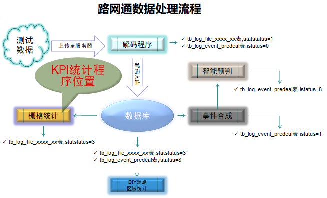
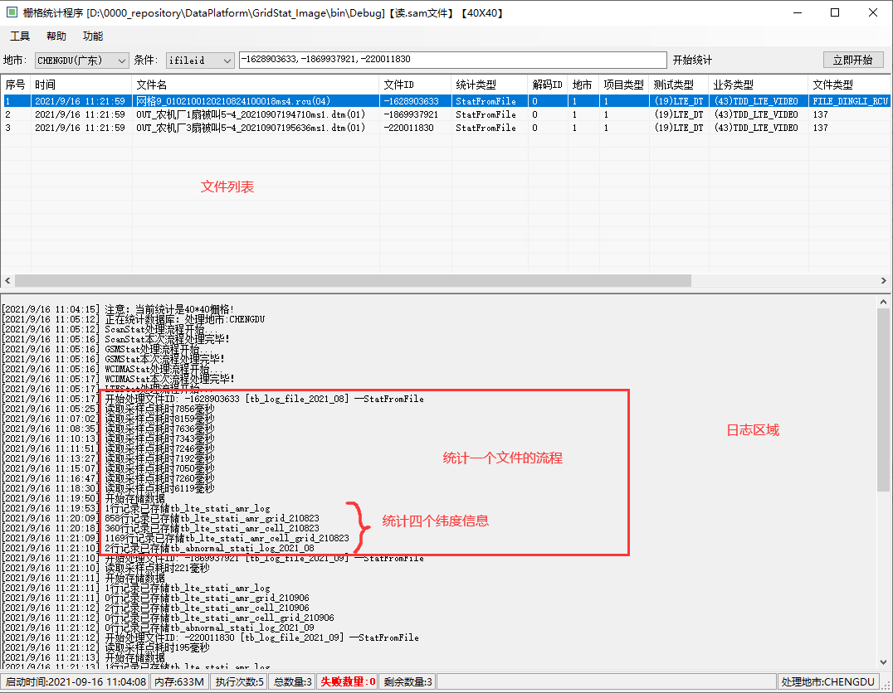
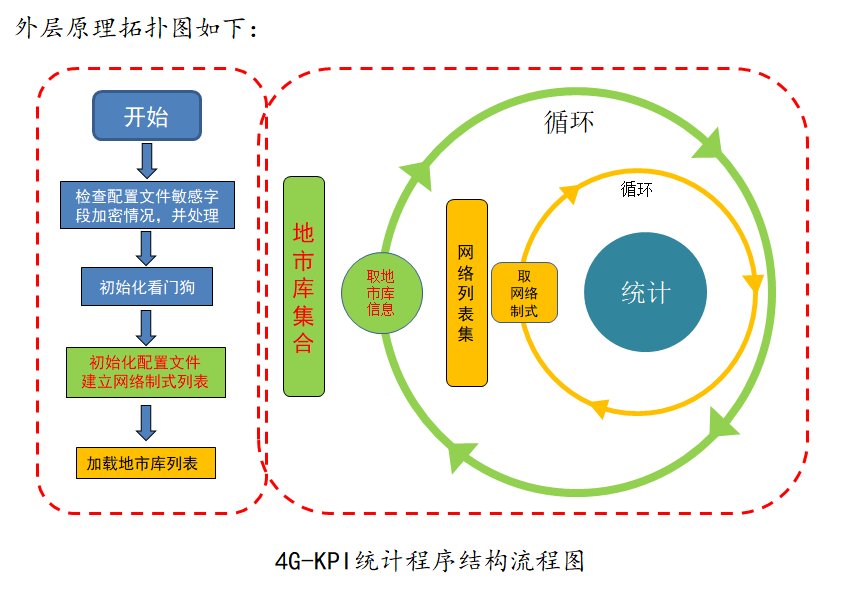
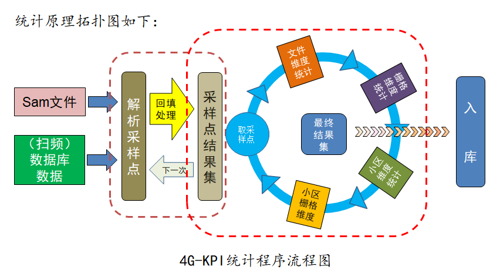

一、程序的简介
-
4G-KPI统计程序的背景：
随着通信业务的发展，测试任务的繁多，统计维度也越来越多样， 迫切的需要一种更高维度的指标呈现方式。其次，数据量的不断增长， 对于客户端的处理负担很大，对数据的处理急需一个中间环节来分解压力。
4G-KPI统计程序为满足上述需求而诞生。
4G-KPI统计程序可以实现 文件维度、栅格维度、小区维度、小区栅格维度 四个维度的指标统计，还可针对主服、领区、应用层、调度层、语音质量等纵向统计分析，实现指标的全面供给和专项统计。
-
图标和名称
GridStat_IMAGE.exe
注释：大家可以发现4G统计程序的名字叫GridStat(即栅格统计)，推测是由于历史原因造成的。可能一开始只是做栅格统计的功能，但是后续又不断的增加纬度，但是项目名称没做更改。
-
角色与位置

二、程序说明
-
程序界面
 界面说明：
1. 地市下拉框是用来选择地市的，也就是选择使用那个地市的库执行。
2. 条件输入框中比较常用的就是ifileid, 可以输入单个文件ID对单个文件进行统计，也可以输入多个文件ID对多个文件进行统计， 多个文件ID需要用逗号隔开。当利用条件进行统计时，需要点击“开始查询”，如果可以匹配到文件，问价列表中会显示出匹配到的文件，然后再点击“开始统计”进行统计即可。
3. 立即执行按钮点击后，程序会根据默认配置进行统计，会忽略设置的条件。
4. 底部状态栏显示程序启动时间，当前占用内存状态，执行次数，失败次数，剩余待统计的文件数，以及当前处理的地市等信息。
三、工作原理
-
原理：
将每个采样点在不同维度上进行计算(加法、除法、比较运算)即(求和、求均值、最大最小值)
-
外层结构原理拓扑图
-
加密处理：
出于安全考虑，目前所有程序在配置文件中涉及的账号密码等安全信息都要经过加密处理。目的是检测敏感信息是否被加密， 没有加密的要进行加密处理。
-
初始化看门狗
看门狗对于后台程序都是必要的。在后台程序卡死，退出等不正常工作情况下，看门狗可以唤醒程序，保证程序始终保持运行状态。
-
初始化网络制式列表
目前可以统计的网络制式有: GSM、CDMA、CDMA2000、TDSCDMA、WCDMA、LTE、LTEFDD、WLAN、SCAN。 配置文件中会配置统计程序需要处理的网络制式，初始化网络制式列表即解析这些网络制式的配置情况，然后整理到待处理列表中。
-
加载地市库列表
一个省往往有多个地市，在部署的路网通平台中就会体现为多个地市库。配置文件中配置地市库的数量，以及每个地市库的链接方式。 程序在启动时会进行解析，将解析好的地市库信息放到带使用的列表中。
-
循环流程说明
由于每个地市库中所有配置的网络制式都应该被统计到，因此，统计分为两个循环，外循环负责每个地市库的统计， 内循环负责每个地市库中，每一种网络制式都被统计到。
-
加密处理：
-
统计原理拓扑图
-
解析采样点
业务类文件采样点数据源为sam文件，解析格式为sam文件数据格式。扫频类文件的采样点数据源是采样点表， 解析格式为表字段+扫频信息数据结构。解析后的采样点会放在一个list列表中。
-
回填处理
回填机制主要用来处理采样参数缺失的情况，用LTE举例，如果要计算里程，需要在每个采样点上添加一个时间属性， 然后存放自身和上一个点的时间间隔,这样在统计的时候就可以直接遍历采样点来计算了。这个过程就需要做回填。此外还有PEQ、RSRP、SINR、占网时长标志等
-
统计流程
4GKPI统计程序是站在采样点的立场上，以采样点为中心，循环遍历每个采样点，每个采样点按顺序进行文件维度、栅格维度、小区维度、小区栅格纬度， 这4个维度的运算统计，最后将统计生成的结果存入数据库中。
-
解析采样点
四、其它说明
-
配置文件名称：GridStat_IMAGE.exe.config
-
配置字段说明
字段名 说明 InterSeconds 程序自动执行间隔，单位秒 DBNum 地市库个数 DTASYSTEMConnectionStringdb(1~30) 地市库链接信息 DealProjectList 需要处理的项目类型列表 NotDealProjectList 不需要处理的项目类型列表 ATU_Distance_Ratio 计算里程的比例 SamFileReStatStatus 需要进行统计的文件状态 DealAreaTypeList 需要处理的地域类型 GridStat_GSM 是否统计GSM网络 GridStat_CDMA 是否统计CDMA网络 GridStat_CDMA2000 是否统计CDMA2000网络 GridStat_TDSCDMA 是否统计TDSCDMA网络 GridStat_WCDMA 是否统计WCDMA网络 GridStat_LTE 是否统计LTE网络 GridStat_LTEFDD 是否统计LTEFDD网络 GridStat_WLAN 是否统计WLAN网络 GridStat_SCAN 是否统计扫频数据 DealExeIDList 需要处理的解码程序ID MemoryMax 最大内存限制 ApplicationID 程序ID TENGRID_30_30 使用30x30栅格统计 TENGRID_100_100 使用100x100栅格统计 StatStatusValue 需要进行统计的文件状态 SamFilesDir sam文件目录 StatMonthsAppend 统计多久时间间隔内的文件 StatMethod_Log 文件维度统计开关 StatMethod_Grid 栅格维度统计开关 StatMethod_Cell 小区维度统计开关 StatMethod_CellGrid 小区栅格维度统计开关 HandleServiceTypeIds 需要统计的业务类型列表 SkipServiceTypeIds 不需要统计的业务类型列表 DealCitys 需要统计的地市id列表 -
其它功能项比较抽象，请培训讲师现场操作演示！